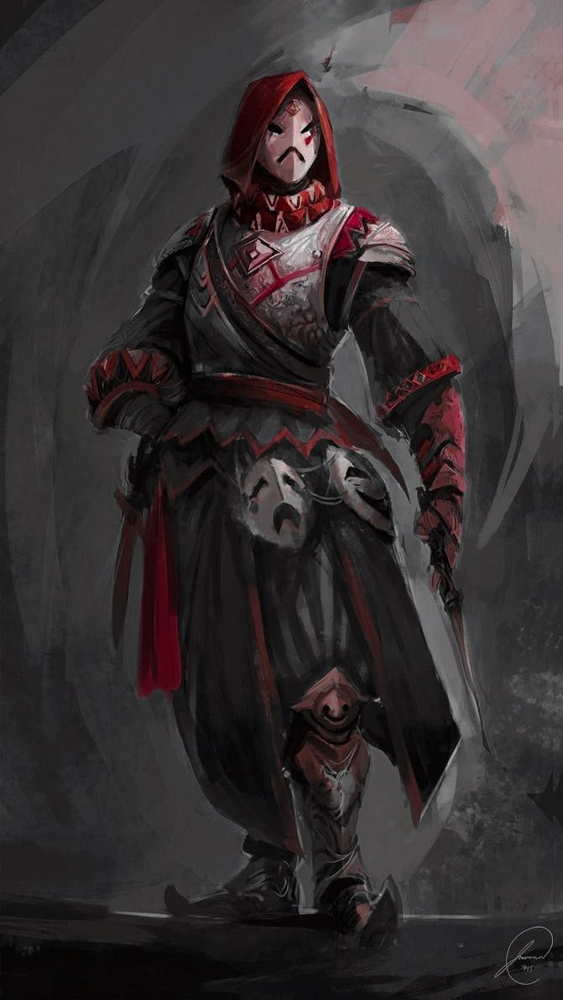

Про Jarrok говорять пошепки, бо ніхто не знає, ким він був насправді. Одні кажуть, що він був людиною. Інші — що він був істотою з іншого виміру. Треті — що він узагалі не мав тіла, а лише маску, яка сміялася замість нього. Але всі погоджуються в одному: він з’явився нізвідки, і так само зникав, залишаючи після себе лише сміх, що лунав у темряві.
Його вперше помітили тоді, коли проявилася його божественна сутність. Хтось побачив його силует на даху, хтось — у тіні між двома будинками, хтось — у відблиску гральної карти, що впала на землю. Він завжди був у масці, завжди в одязі, який приховував усе, крім рухів — легких, граційних, майже танцювальних. Ніхто не бачив його обличчя. Ніхто не чув його справжнього голосу. Але всі знали його сміх — дзвінкий, трохи божевільний, але дивно теплий.
Про нього складали легенди. У кожній — своя правда. Одні казали, що він міг зламати будь-який замок, навіть той, який охороняли магічні печаті. Інші — що він одного разу проник у скарбницю королівства й вийшов звідти з порожніми руками, просто щоб довести, що може. Треті — що він був майстром гральних карт, які в його руках ставали зброєю, гострою, як клинки. А клинки в його руках співали, ніби раділи, що їх тримає саме він.
Jarrok був непередбачуваним. Він міг з’явитися посеред бенкету, вкрасти келих вина, підморгнути королю й зникнути, ніби розчинився в повітрі. Він міг врятувати людину від розбійників, а потім пожартувати над нею так, що вона не знала, чи дякувати, чи сердитися. Він міг сміятися в обличчя небезпеці, ніби вона була старим другом.
Але за всім цим сміхом ховалося щось більше. Його натура була дивною — він ніколи не сумував. Ніколи не зупинявся. Ніколи не озирался назад. Він ішов уперед, ніби знав шлях, який ніхто інший не бачив. І кожен його крок був танцем між хаосом і свободою.
Кажуть, що одного разу його бачили таким, яким він був насправді — не людиною, не демоном, а чимось між ними. Силует, що мерехтів, як полум’я. Очі, що світилися сміхом і божевіллям. І маска, яка була не прикрасою, а частиною його сутності.
І тоді зрозуміли: Jarrok — не просто жартівник. Він — божество свободи, випадковості, гри. Той, хто сміється над долею й кидає їй виклик. Той, хто приходить, коли світ стає надто серйозним. Той, хто нагадує, що життя — це гра, і кожен хід може змінити все.
Але як він став богом — ніхто не знає. Можливо, він народився таким. Можливо, сам обіграв долю. А можливо, він просто сміявся так довго й так щиро, що навіть боги не змогли не помітити його.
І тепер, коли в темряві чути тихий сміх, люди кажуть:
“Це Jarrok. Він знову грає свою гру.”